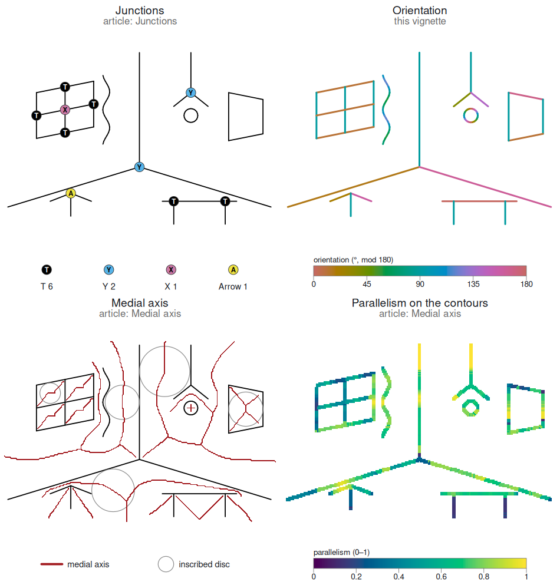
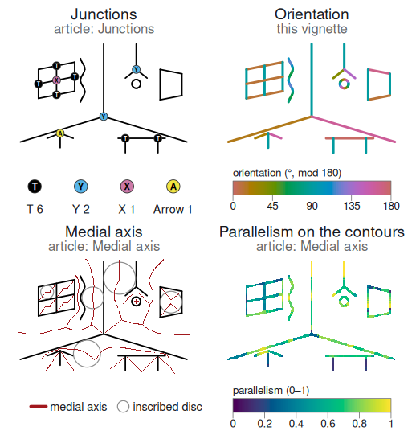
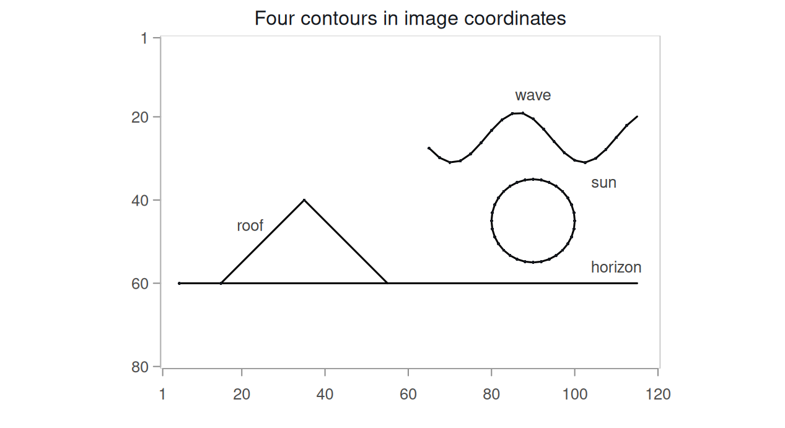
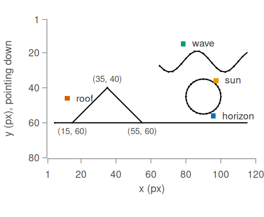
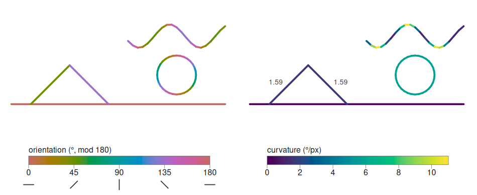
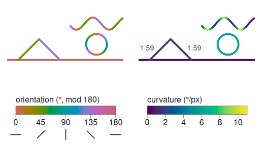
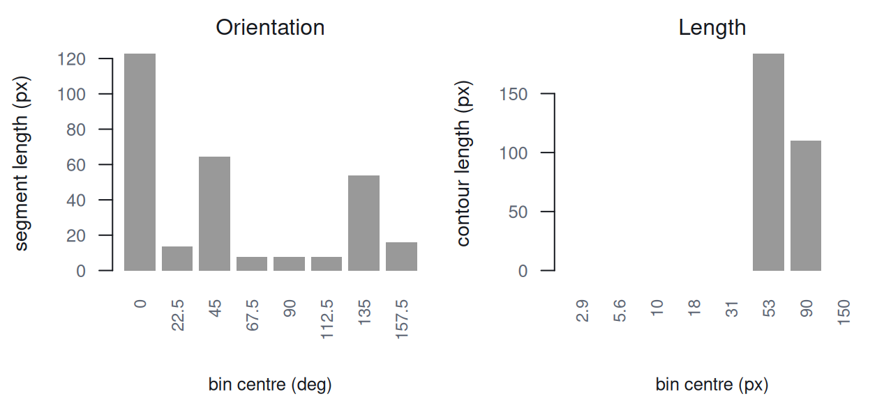
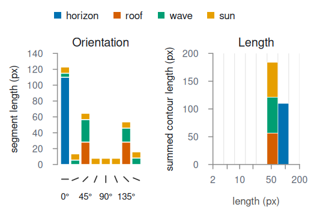
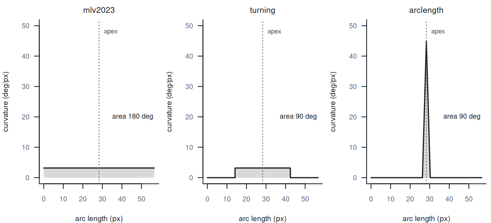
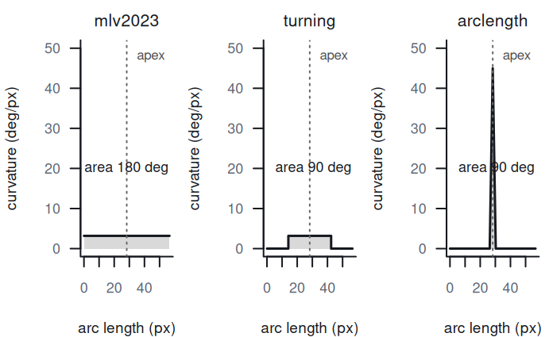

mlvtoolbox measures the geometry of line drawings: the
orientation, length and curvature of each contour, the junctions where
contours meet, and the medial-axis symmetry of the spaces between them.
This vignette builds a small drawing by hand, measures it, and turns the
measurements into the histograms and per-contour feature tables used as
predictors in behavioural and neuroimaging analyses. Every number quoted
below is computed when the vignette is built, and each is small enough
to check by hand.


What the package measures, on one synthetic room of 17 contours. Top: the 10 junctions it finds, coloured by type, and segment orientation. Bottom: the medial axis (red) between the contours, with 5 of its inscribed discs, and the parallelism of the space beside each contour, mapped back onto it (drawn 3 px wide; added pixels copy the nearest ink pixel). Each panel names its vignette.
The code for this scene and figure is in the appendix at the end of this vignette; the sections below build up each measure on a smaller drawing.
A drawing is a list of contours
A contour is one continuous stroke, stored as a matrix with
one row per straight segment and columns x1,
y1, x2, y2. The end of each row
is the start of the next, so the rows trace the stroke in order; the
shared points are the contour’s vertices. A drawing
(mlv_drawing) is a list of contours plus the size of the
canvas in pixels.
Coordinates are image coordinates: x increases to the right, y increases downward, and pixel centres sit at integers, starting at (1, 1). Coordinates need not be integers, and a contour may extend past the canvas.
The drawing below has four contours: a straight horizon, a roof whose two slopes meet at a 90 degree apex, a sampled sine wave, and a closed 32-sided polygon approximating a circle (the sun). A closed contour is one whose last point equals its first.
polyline <- function(x, y) {
n <- length(x)
cbind(x1 = x[-n], y1 = y[-n], x2 = x[-1], y2 = y[-1])
}
wave_x <- seq(65, 115, by = 2.5)
sun_t <- seq(0, 2 * pi, length.out = 33)
drawing <- mlv_drawing(
list(horizon = polyline(c(5, 115), c(60, 60)),
roof = polyline(c(15, 35, 55), c(60, 40, 60)),
wave = polyline(wave_x, 25 + 6 * sin(wave_x / 5)),
sun = polyline(90 + 10 * cos(sun_t), 45 - 10 * sin(sun_t))),
width = 120, height = 80,
ids = c("horizon", "roof", "wave", "sun"))
drawing
#> <mlv_drawing> 4 contours, 55 segments, 120 x 80 pixels
op <- par(mar = c(3, 3.2, 0.3, 0.5))
plot(drawing, lwd = 1.5, frame = FALSE)
canvas_titles(drawing, "x (px)", "y (px), pointing down")
vertices <- do.call(rbind, lapply(drawing$contours, function(z) z[, 1:2]))
points(vertices, pch = 16, cex = 0.35)
roof_xy <- rbind(drawing$contours[[2]][, 1:2], drawing$contours[[2]][2, 3:4])
text(roof_xy[, 1], roof_xy[, 2], sprintf("(%g, %g)", roof_xy[, 1], roof_xy[, 2]),
pos = c(1, 3, 1), cex = 0.7, col = "grey30", offset = 0.4)
label_contours()

The drawing on its 120 × 80 pixel canvas. The y axis points down, as in an image, and dots mark the vertices: the horizon has 2, the roof 3 and the sun 32. The roof’s vertices are labelled, for the hand calculations below; the coloured squares key each contour to the histograms further down.
par(op)mlv_drawing() checks the input before anything is
measured. Rows of a contour must connect, and a segment of zero length
is an error unless you ask for it to be removed with
zero_length = "drop". Keep strokes that a viewer sees as
separate in separate contours: contour identity determines which
crossings count as junctions and which histogram a contour’s length
enters.
Segment measurements
as.data.frame() returns one row per segment with three
measurements.
- Orientation is the direction from the segment’s start to its end, in degrees counterclockwise from the rightward x axis. Because y points down, “counterclockwise” means as seen on the screen: a segment drawn up and to the right has orientation 45. Orientation is directed (0 to 360); histograms treat it as axial, modulo 180, because a line has no direction.
- Length is the Euclidean length in pixels.
- Curvature is in degrees per pixel. A polygon turns only at its vertices, so curvature is defined by where each vertex’s turning angle is placed. The default vertex turning estimator spreads each turn evenly over the vertex’s dual cell, which runs from the midpoint of the segment before the vertex to the midpoint of the segment after it, so every turn is counted once. A segment’s curvature is its mean curvature: the turning that falls on the segment divided by its length. The two end halves of an open contour belong to no vertex and carry no turning.
segments <- as.data.frame(drawing)
segments[segments$contour_id %in% c("horizon", "roof"),
c("contour_id", "segment_index", "length", "orientation", "curvature")]
#> contour_id segment_index length orientation curvature
#> 1 horizon 1 110.00000 0 0.00000
#> 2 roof 1 28.28427 45 1.59099
#> 3 roof 2 28.28427 315 1.59099These values can be checked by hand. The left slope of the roof runs from (15, 60) to (35, 40): 20 pixels right and 20 pixels up the screen, so its orientation is 45 degrees and its length is √800 = 28.28 pixels. The right slope runs down and to the right, orientation 315. At the apex the direction changes by 90 degrees. The apex’s dual cell is the inner half of each slope, √800 pixels in all, so each slope receives 45 degrees of turning and a mean curvature of 45 / 28.28 = 1.59 degrees per pixel. The roof’s length-weighted total curvature is 90 degrees, the single turn at the apex. The sun’s 32 vertices each turn by 360 / 32 = 11.25 degrees; each side, 1.96 pixels long, receives half of the turn at each of its ends, a curvature of 5.74 degrees per pixel. A true circle of radius 10 has curvature 180 / (10π) = 5.73 degrees per pixel.
Within a segment the curvature is not uniform: the density is 3.18
degrees per pixel on the roof’s two inner halves and zero on its outer
halves. curvature_profile() returns this piecewise density,
one row per piece, and the curvature histograms below integrate it
exactly.
The published MLV estimator, estimator = "mlv2023", is
available for comparison with published values. It returns one row per
segment and gives each segment the whole turn to the next segment
divided by its own length; the last segment of an open contour, which
has no next segment, repeats the turn from the one before it.
published <- as.data.frame(drawing, estimator = "mlv2023")
published_roof <- published[published$contour_id == "roof", ]
published_roof[, c("segment_index", "length", "orientation", "curvature")]
#> segment_index length orientation curvature
#> 2 1 28.28427 45 3.181981
#> 3 2 28.28427 315 3.181981Both slopes now receive 3.18 degrees per pixel, the whole 90 degree turn each, so the roof’s total curvature is 180 degrees, twice the actual turn. Because a vertex’s turn is divided by the length of one neighbouring segment only, the published values also depend on how a curve is sampled: a circle whose vertices alternate between short and long spacings receives two different curvatures, where the turning estimator gives one. The section on feature specifications below compares the estimators.
plot() colours segments by a measurement and adds a
colour bar that names the quantity and its unit. Orientation uses a
cyclic palette over 0 to 180 degrees, so the roof’s two slopes (45 and
135 degrees, axially) sit on opposite sides of the colour wheel and a
horizontal segment has the same colour whichever way it was drawn.
Length and curvature use a sequential palette. In the figure below each
panel is drawn with legend = FALSE and its key by
colour_key() in a layout cell of its own, which keeps the
key off the drawing; colour_key() also lets several panels
share one key.
# The keys name the quantities, so the panels need no titles.
layout(matrix(1:4, 2), heights = c(1, lcm(2.4)))
op <- par(mar = c(0.3, 0.3, 0.3, 0.3))
# Crop to the ink, which fills the canvas only between rows 15 and 60.
window <- list(xlim = c(1, 120), ylim = c(65, 13))
plot(drawing, property = "orientation", lwd = 2.5, axes = FALSE, legend = FALSE,
frame = FALSE, xlim = window$xlim, ylim = window$ylim)
colour_key(drawing, "orientation", glyphs = TRUE)
plot(drawing, property = "curvature", lwd = 2.5, axes = FALSE, legend = FALSE,
frame = FALSE, xlim = window$xlim, ylim = window$ylim)
# The roof's slopes carry the same value; label it on each.
text(c(25, 45), c(49, 49), sprintf("%.2f", roof$curvature), pos = c(2, 4), cex = 0.7,
col = "grey25")
colour_key(drawing, "curvature")

Each segment coloured by its orientation (left) and by its mean curvature (right). The orientation palette wraps, so 0° and 180° share a colour, and the roof’s slopes, at 45° and 135°, sit on opposite sides of the key. The straight horizon has zero curvature, the roof’s two slopes share the apex turn equally (1.59°/px each), and the wave curves most at its peaks and troughs.
The colour scale for length and curvature runs over the data range by
default. Pass a fixed zlim when several drawings must share
one scale.
Storing measurements and junctions
compute_contour_properties() measures the drawing once
and stores the results on it: the segment table, the length of each
contour, and the junctions between contours.
measured <- compute_contour_properties(drawing)
measured$contour_properties
#> contour_id length
#> 1 horizon 110.00000
#> 2 roof 56.56854
#> 3 wave 64.69867
#> 4 sun 62.73097
measured$junctions[, c("x", "y", "type", "min_angle", "max_angle")]
#> x y type min_angle max_angle
#> 1 15 60 T 45 180
#> 2 55 60 T 45 180The roof ends on the horizon at both eaves, so the drawing has 2
junctions, both T-junctions: the horizon contributes two arms and the
roof slope a third, at 45 degrees to the horizon. How junctions are
found, what an arm is and how the type and angles are defined are the
subject of
vignette("junctions", package = "mlvtoolbox").
Histograms
Most analyses do not use segment tables directly. They use histograms
that summarize a drawing, or each contour, in a fixed set of bins.
contour_statistics() returns them in long form, one row per
bin.
stats <- contour_statistics(measured,
properties = c("orientation", "length", "curvature"))
head(stats[stats$property == "orientation",
c("property", "label", "lower", "upper", "value", "units")], 8)
#> property label lower upper value units
#> 1 orientation 0 -11.25 11.25 122.865077 pixels
#> 2 orientation 22.5 11.25 33.75 13.434010 pixels
#> 3 orientation 45 33.75 56.25 64.497085 pixels
#> 4 orientation 67.5 56.25 78.75 7.841371 pixels
#> 5 orientation 90 78.75 101.25 7.841371 pixels
#> 6 orientation 112.5 101.25 123.75 7.841371 pixels
#> 7 orientation 135 123.75 146.25 53.706382 pixels
#> 8 orientation 157.5 146.25 168.75 15.971516 pixelsThe weighting is part of the definition of each histogram, and the defaults were chosen so that the histograms describe ink, not vertex counts:
- the orientation histogram adds each segment’s length to the bin of its axial orientation, so a contour sampled with more vertices does not count more;
- the length histogram adds each whole contour’s length to the bin of that length;
- the curvature histogram adds length to the bin of the curvature density along it, so the roof’s inner halves enter one bin and its outer halves the zero bin.
Length and curvature bins are equally spaced in log10(1 + x) between
the ends of length_range (by default 2 pixels and the
canvas width plus height) and curvature_range (by default 0
to 90 degrees per pixel). Here the 8 length bins have edges at 2, 4.07,
7.58, 13.5, 23.6, 40.5, 69.3, 118, 200 pixels, and the curvature bins at
0, 0.757, 2.09, 4.43, 8.54, 15.8, 28.5, 50.8, 90 degrees per pixel.
Values outside a range enter the first or last bin.
Orientation bins are centred on 0, 22.5, 45, … degrees, so the first bin runs from −11.25 to 11.25 degrees. It holds 122.9 pixels: the 110-pixel horizon plus the near-horizontal parts of the wave and the sun. The 45 degree bin receives the left roof slope (28.3 pixels) and about as much again from the rising flanks of the wave (28.4 pixels), plus 7.8 from the sun. The 135 degree bin receives the right slope, 17.6 pixels of wave and the same 7.8 from the sun. In the length histogram the horizon alone fills the bin from 69.3 to 117.8 pixels; the other three contours, 57 to 65 pixels long, share the bin below it.
layout(matrix(c(1, 1, 2, 3), 2, byrow = TRUE), heights = c(lcm(0.9), 1))
op <- par(mar = c(0, 0, 0, 0), las = 1, cex.axis = 0.8, cex.main = 1, font.main = 1)
contour_legend()
par(mar = c(3.6, 4, 1.6, 0.8))
# Orientation: one stacked bar per bin, a short line under each showing its angle.
top <- max(pretty(c(0, ori$value)))
mids <- barplot(ori_stack, col = contour_cols, border = "white", lwd = 0.5, space = 0.15,
ylim = c(0, top), axes = FALSE, names.arg = rep("", ncol(ori_stack)),
main = "Orientation")
value_axis(top, "segment length (px)")
orientation_glyphs(mids, ori$center)
# Length: bins equal in log10(1 + x), drawn at their true widths.
top <- log_stacked_bars(len_stack, len$lower, len$upper, length_edges,
main = "Length", xlab = "length (px)")
value_axis(top, "summed contour length (px)")

Histograms for the whole drawing, each bar split by contour. Left: segment length per orientation bin; the horizontal bin dominates, with 122.9 px of ink. Right: whole-contour length per length bin, drawn at the bins’ true widths on a log10(1 + length) axis; the horizon alone fills one bin, and the other three contours share the next shorter bin.
With normalize = TRUE each histogram is divided by total
contour length and expressed per 10,000 pixels of contour, so drawings
with different amounts of ink can be compared. With
by = "contour" the histograms are computed per contour
instead of per drawing.
Per-contour feature tables
feature_table() puts the per-contour histograms side by
side: one row per contour, one column per bin, normalized per 10,000
pixels by default. This is the format used to fit a model of a
per-contour response.
features <- feature_table(measured)
dim(features)
#> [1] 4 30
features[, c("contour_id", paste0("orientation_", 1:8))]
#> contour_id orientation_1 orientation_2 orientation_3 orientation_4
#> 1 horizon 10000.0000 0.0000 0.000 0
#> 2 roof 0.0000 0.0000 5000.000 0
#> 3 wave 776.4775 864.4132 4385.166 0
#> 4 sun 1250.0000 1250.0000 1250.000 1250
#> orientation_5 orientation_6 orientation_7 orientation_8
#> 1 0 0 0.000 0.000
#> 2 0 0 5000.000 0.000
#> 3 0 0 2717.326 1256.617
#> 4 1250 1250 1250.000 1250.000The rows can again be read off the geometry. All of the horizon’s length lies in the first orientation bin, so it scores 10,000 there and zero elsewhere. The roof’s length divides equally between the 45 and 135 degree bins (5,000 each). The sun’s 32 equal segments step through every orientation in 11.25 degree increments, four per bin, so each of the eight bins holds 1,250.
The table carries a schema that records each column’s bin edges,
weights, units and normalization. feature_schema(features)
returns it, and model prediction uses it to refuse tables measured
differently from the training data (see
vignette("workflows", package = "mlvtoolbox")).
Feature specifications
Two settings above depend on things other than the contour geometry. The default length bins end at the canvas width plus height, so the same contours on a larger canvas fall into different bins. The curvature estimator, junction rule and medial-axis method also change the numbers. A feature specification fixes all of these in one object, so that every drawing in a study is measured the same way and the choices are recorded with the results.
larger <- mlv_drawing(drawing$contours, width = 240, height = 160,
ids = drawing$ids)
default_small <- feature_table(drawing, properties = "length")
default_large <- feature_table(larger, properties = "length")
rbind(small_canvas = default_small[1, -1], large_canvas = default_large[1, -1])
#> length_1 length_2 length_3 length_4 length_5 length_6 length_7
#> small_canvas 0 0 0 0 0 0 10000
#> large_canvas 0 0 0 0 0 10000 0
#> length_8
#> small_canvas 0
#> large_canvas 0
spec <- feature_spec(c("orientation", "length", "curvature"),
length_range = c(2, 400))
identical(feature_table(drawing, spec = spec)[, -1],
feature_table(larger, spec = spec)[, -1])
#> [1] TRUE
spec$settings[c("estimator", "bins", "length_range", "normalize")]
#> $estimator
#> [1] "turning"
#>
#> $bins
#> [1] 8
#>
#> $length_range
#> [1] 2 400
#>
#> $normalize
#> [1] TRUEUnder the specification the horizon’s length bin no longer depends on the canvas. The specification also records method definitions for the curvature estimator, the junction rule and the medial-axis stages, which is why a table built under one specification cannot silently be mixed with one built under another.
The estimator setting selects the curvature definition.
"turning", the default, is the vertex turning estimator
described above: each vertex turn is counted once, spread evenly over
the vertex’s dual cell, and it has no tuning parameter.
"arclength" spreads each turn over a tent of half-width
curvature_scale pixels along the contour, so curvature is
expressed at a stated spatial scale and each turn is still counted once.
Its values stop depending on vertex density once segments are shorter
than that scale; a coarsely sampled contour still concentrates its turns
at its few vertices. Both wrap around closed contours.
"mlv2023" is the published estimator.
roof_only <- subset_contours(drawing, "roof")
arc_scale <- 2 # half-width, in pixels, of the arc-length estimator's tent
profiles <- list(mlv2023 = as.data.frame(roof_only, estimator = "mlv2023"),
turning = curvature_profile(roof_only, "turning"),
arclength = curvature_profile(roof_only, "arclength", scale = arc_scale))
sapply(profiles, function(p) sum(p$curvature * p$length))
#> mlv2023 turning arclength
#> 180 90 90The integrated curvature of the roof, the sum of curvature times
length, is 180 degrees under the published estimator and 90 degrees
under the turning and arc-length estimators, which matches the single 90
degree turn at the apex. contour_turning() lists the
unsmoothed vertex turns directly.
# Exact running integral of a piecewise-linear curvature profile.
cumulative <- function(p, n = 40) {
s0 <- if (is.null(p$s_start)) c(0, cumsum(p$length)[-nrow(p)]) else p$s_start
s1 <- if (is.null(p$s_end)) cumsum(p$length) else p$s_end
k0 <- if (is.null(p$curvature_start)) p$curvature else p$curvature_start
k1 <- if (is.null(p$curvature_end)) p$curvature else p$curvature_end
s <- 0; total <- 0; out <- 0
for (i in seq_along(s0)) {
t <- seq(0, s1[i] - s0[i], length.out = n)
run <- total + k0[i] * t + (k1[i] - k0[i]) / (2 * (s1[i] - s0[i])) * t^2
s <- c(s, s0[i] + t[-1]); out <- c(out, run[-1]); total <- run[n]
}
list(s = s, turn = out)
}
curves <- lapply(profiles, cumulative)
stopifnot(isTRUE(all.equal(vapply(curves, function(z) z$turn[length(z$turn)], 0),
totals)))
# Three estimators of one roof: line weights and types, not hues (the hues of
# this page belong to the four contours).
est_style <- list(mlv2023 = list(col = "grey60", lwd = 3.2, lty = 1),
turning = list(col = "black", lwd = 1.8, lty = 1),
arclength = list(col = "black", lwd = 1.8, lty = 2))
apex <- sqrt(800); roof_length <- 2 * apex
op <- par(mar = c(3.4, 3.8, 0.6, 2.6), las = 1, cex.axis = 0.8)
plot(NA, xlim = c(0, roof_length), ylim = c(0, 190), xaxs = "i", yaxs = "i",
axes = FALSE, xlab = "", ylab = "")
abline(h = c(90, 180), col = "grey90", lwd = 0.8)
abline(v = apex, lty = 3, col = "grey40")
for (e in c("mlv2023", "arclength", "turning"))
lines(curves[[e]]$s, curves[[e]]$turn, lwd = est_style[[e]]$lwd,
col = est_style[[e]]$col, lty = est_style[[e]]$lty)
axis(1, at = c(seq(0, 50, by = 10), roof_length),
labels = c(seq(0, 50, by = 10), round(roof_length, 1)), col = "grey55",
col.ticks = "grey55", tcl = -0.3, mgp = c(3, 0.5, 0))
axis(2, at = c(0, 45, 90, 135, 180), col = "grey55", col.ticks = "grey55", tcl = -0.3)
title(xlab = "arc length along the roof (px)", line = 2, cex.lab = 0.85)
title(ylab = "accumulated turning (°)", line = 2.6, cex.lab = 0.85)
text(apex, 186, "apex", pos = 4, cex = 0.75, col = "grey30", offset = 0.3)
# Names against each curve, where it is alone; totals at the right-hand ends.
text(26.6, 98, "published\n(mlv2023)", adj = c(1, 0), cex = 0.8)
text(37, 62, "turning", adj = c(0, 1), cex = 0.8)
text(29.6, 25, "arc length", adj = c(0, 0.5), cex = 0.8)
text(roof_length, unique(totals), paste0(unique(totals), "°"), pos = 4, xpd = NA, cex = 0.8,
offset = 0.3)

Turning accumulated along the roof by three estimators; each curve’s final height is the total turning it assigns. The published estimator (mlv2023; grey, since this page’s hues name contours) spreads the apex turn over both whole slopes and counts it twice, reaching 180°; the turning estimator spreads it over the slopes’ inner halves and the arc-length estimator 2 px either side of the apex, and both reach the 90° turn.
par(op)The estimators also differ in how they respond to sampling. A circle of radius 10 drawn as a regular polygon has one curvature under every estimator, the polygon’s turn over its side, which approaches 180 / (10π) degrees per pixel as vertices are added. If the vertices instead alternate between a short and a long spacing (1 : 2 in angle), the turning estimator still gives a single value, while the published estimator divides each vertex’s turn by the length of the segment before it and splits the circle into two curvatures:
circle <- function(n, spacing) {
t <- c(0, cumsum(rep(spacing, length.out = n))) / sum(rep(spacing, length.out = n)) * 2 * pi
mlv_drawing(list(polyline(60 + 10 * cos(t), 40 - 10 * sin(t))), 120, 80)
}
occupied <- function(d, e) {
h <- contour_statistics(d, "curvature", estimator = e)
paste(sprintf("%.2f-%.2f", h$lower, h$upper)[h$value > 0], collapse = " and ")
}
resampled <- expand.grid(vertices = c(16, 32, 64, 128), estimator = c("turning", "mlv2023"),
stringsAsFactors = FALSE)
resampled$regular <- mapply(function(n, e) occupied(circle(n, 1), e), resampled$vertices, resampled$estimator)
resampled$alternating <- mapply(function(n, e) occupied(circle(n, c(1, 2)), e), resampled$vertices, resampled$estimator)
resampled
#> vertices estimator regular alternating
#> 1 16 turning 4.43-8.54 4.43-8.54
#> 2 32 turning 4.43-8.54 4.43-8.54
#> 3 64 turning 4.43-8.54 4.43-8.54
#> 4 128 turning 4.43-8.54 4.43-8.54
#> 5 16 mlv2023 4.43-8.54 2.09-4.43 and 8.54-15.76
#> 6 32 mlv2023 4.43-8.54 2.09-4.43 and 8.54-15.76
#> 7 64 mlv2023 4.43-8.54 2.09-4.43 and 8.54-15.76
#> 8 128 mlv2023 4.43-8.54 2.09-4.43 and 8.54-15.76The table gives the range, in degrees per pixel, of each curvature
bin that receives length (8 bins from 0 to 90 degrees per pixel). For
new studies use the turning default, or the arc-length estimator with a
curvature scale chosen for the stimulus resolution when curvature should
be stated at a spatial scale; choose a scale longer than the typical
segment so that the values do not depend on how finely contours were
sampled. The published estimator is the right choice only when results
must be comparable with published MLV values
(vignette("mlv-compatibility", package = "mlvtoolbox")).
The same specification can express physical units:
units = "visual_degrees" with a
pixels_per_degree calibration reports lengths in degrees of
visual angle (curvature stays in geometric degrees per unit length).
Where to go next
-
vignette("junctions", package = "mlvtoolbox"): how junctions are found, what an arm is, and where the default rule differs from MLV. -
vignette("medial-axis", package = "mlvtoolbox"): the medial axis and the parallelism, separation, mirror and taper scores mapped back onto contours. -
vignette("mlv-compatibility", package = "mlvtoolbox"): reproducing published MLV values and what each default changes. -
vignette("workflows", package = "mlvtoolbox"): reading SVG, MAT and image files, and fitting and applying models to feature tables. -
vignette("stimulus-design", package = "mlvtoolbox"): selecting matched subsets of contours across a stimulus set.
Appendix: the opening figure
The scene and the four panels at the top of this vignette:
# A synthetic room: a wall corner, a window with mullions and a curtain, a
# picture, a table, a hanging lamp and a box, as 17 contours.
sc_line <- function(x, y) { n <- length(x); cbind(x1 = x[-n], y1 = y[-n], x2 = x[-1], y2 = y[-1]) }
sc_closed <- function(x, y) sc_line(c(x, x[1]), c(y, y[1]))
curtain_y <- seq(25, 85, by = 2.5); bulb_t <- seq(0, 2 * pi, length.out = 25)
scene <- mlv_drawing(list(
corner = sc_line(c(120, 120), c(5, 105)),
floor_left = sc_line(c(120, 5), c(105, 140)),
floor_right = sc_line(c(120, 235), c(105, 140)),
window = sc_closed(c(30, 80, 80, 30), c(40, 30, 70, 80)),
mullion_v = sc_line(c(55, 55), c(35, 75)),
mullion_h = sc_line(c(30, 80), c(60, 50)),
curtain = sc_line(91 + 3 * sin(curtain_y / 5), curtain_y),
picture = sc_closed(c(198, 228, 228, 198), c(40, 46, 76, 82)),
table_top = sc_line(c(140, 205), c(135, 135)),
leg_left = sc_line(c(150, 150), c(135, 155)),
leg_right = sc_line(c(195, 195), c(135, 155)),
cord = sc_line(c(165, 165), c(5, 40)),
shade = sc_line(c(150, 165, 180), c(52, 40, 52)),
bulb = sc_line(165 + 6 * cos(bulb_t), 60 - 6 * sin(bulb_t)),
box_left = sc_line(c(60, 42), c(128, 135)),
box_right = sc_line(c(60, 78), c(128, 135)),
box_front = sc_line(c(60, 60), c(128, 148))),
width = 240, height = 160)
scene_junctions <- detect_junctions(scene)
scene_mat <- analyse_mat(scene, properties = "parallelism")
stopifnot(all(c("T", "Y", "X", "Arrow") %in% scene_junctions$type))
# Drawing helpers for the figure. The phone-width copy of a figure is a replay
# of the desktop drawing, so anything measured from the device is drawn
# through recordGraphics(), which re-evaluates it on replay.
replay <- function(f, ...) {
args <- list(...)
recordGraphics(do.call(f, args), list(f = f, args = args), globalenv())
}
panel <- function(title, tag) {
title(main = title, cex.main = 1, font.main = 1, line = 1.15)
mtext(tag, side = 3, line = 0.2, cex = 0.7, col = "grey40")
}
# Junction types: Okabe-Ito colours this page does not give to contours.
type_cols <- c(T = "black", Y = "#56B4E9", X = "#CC79A7", Arrow = "#F0E442")
type_text <- c(T = "white", Y = "black", X = "black", Arrow = "black")
type_letter <- c(T = "T", Y = "Y", X = "X", Arrow = "A")
# Coloured badges with the type's letter, as in the key; smaller on a narrow
# device, where the window's five junctions sit close together.
badges <- function(j) replay(function(x, y, type) {
s <- if (par("din")[1] < 5) 0.6 else 1
points(x, y, pch = 21, bg = type_cols[type], col = "grey20", cex = 1.9 * s, lwd = 0.6)
text(x, y, type_letter[type], cex = 0.6 * s, font = 2, col = type_text[type])
}, x = j$x, y = j$y, type = j$type)
type_key <- function(j) {
par(mar = c(0, 0, 0, 0)); plot.new()
n <- table(factor(j$type, levels = names(type_cols)))
at <- seq(0.14, 0.86, length.out = length(n))
points(at, rep(0.55, length(n)), pch = 21, bg = type_cols, col = "grey20", cex = 1.9, lwd = 0.6)
text(at, 0.55, type_letter, cex = 0.6, font = 2, col = type_text)
text(at, 0.12, sprintf("%s %d", names(n), as.integer(n)), cex = 0.75)
par(mar = c(0.2, 0.2, 2.2, 0.2))
}
axis_key <- function() {
par(mar = c(0, 0, 0, 0)); plot.new()
segments(0.12, 0.5, 0.2, 0.5, col = axis_col, lwd = 2.5)
text(0.22, 0.5, "medial axis", adj = 0, cex = 0.75)
symbols(0.6, 0.5, circles = 0.03, inches = FALSE, add = TRUE, fg = "grey55", lwd = 0.8)
text(0.65, 0.5, "inscribed disc", adj = 0, cex = 0.75)
par(mar = c(0.2, 0.2, 2.2, 0.2))
}
# The medial axis in the package's one encoding: red, thinner than the ink.
axis_col <- eval(formals(draw_mat_axis)$col, environment(draw_mat_axis))
# A handful of inscribed discs, at the axis points nearest to chosen spots: a
# window pane, the wall, the floor, under the table, by the lamp, the picture.
axis_points <- do.call(rbind, lapply(scene_mat$mat$branches, function(b) b[, c("x", "y", "radius")]))
spots <- rbind(c(42, 47), c(103, 55), c(100, 128), c(172, 147), c(140, 28), c(213, 61))
disc_points <- axis_points[apply(spots, 1, function(p)
which.min((axis_points$x - p[1])^2 + (axis_points$y - p[2])^2)), ]
disc_points <- disc_points[with(disc_points, x - radius > 0.5 & x + radius < 240.5 &
y - radius > 0.5 & y + radius < 160.5), ]
# Mapped scores drawn `widen` pixels to each side of the ink, so their colour
# can be read at a glance. Ink pixels keep their own scores; each added pixel
# takes the score of its nearest ink pixel.
widen <- 1
mapped_wide <- function(d, property, w) {
img <- d$mat_images[[property]]; out <- img
steps <- expand.grid(dr = -w:w, dc = -w:w)
steps <- steps[order(steps$dr^2 + steps$dc^2), ][-1, ]
for (k in seq_len(nrow(steps))) {
dr <- steps$dr[k]; dc <- steps$dc[k]
shifted <- matrix(NA_real_, nrow(img), ncol(img))
rr <- max(1, 1 + dr):min(nrow(img), nrow(img) + dr)
cc <- max(1, 1 + dc):min(ncol(img), ncol(img) + dc)
shifted[rr, cc] <- img[rr - dr, cc - dc]
fill <- !is.finite(out) & is.finite(shifted)
out[fill] <- shifted[fill]
}
fill <- matrix("transparent", nrow(out), ncol(out)); ok <- is.finite(out)
pal <- grDevices::hcl.colors(256, "Viridis")
fill[ok] <- pal[1 + pmin(255, floor(out[ok] * 256))]
rasterImage(as.raster(fill), 0.5, nrow(out) + 0.5, ncol(out) + 0.5, 0.5, interpolate = FALSE)
}
layout(matrix(1:8, 4), heights = c(1, lcm(1.25), 1, lcm(1.25)))
op <- par(mar = c(0.2, 0.2, 2.2, 0.2), cex = 0.8)
# Column 1: junctions, then the medial axis.
plot(scene, lwd = 1.2, axes = FALSE, frame = FALSE)
panel("Junctions", "vignette(\"junctions\")")
badges(scene_junctions)
type_key(scene_junctions)
plot(scene, lwd = 1.2, axes = FALSE, frame = FALSE)
panel("Medial axis", "vignette(\"medial-axis\")")
for (k in seq_len(nrow(disc_points)))
symbols(disc_points$x[k], disc_points$y[k], circles = disc_points$radius[k],
inches = FALSE, add = TRUE, fg = "grey55", lwd = 0.8)
draw_mat_axis(scene_mat$mat, width = 0.9)
axis_key()
# Column 2: orientation, then parallelism mapped onto the contours.
plot(scene, property = "orientation", lwd = 2, axes = FALSE, frame = FALSE, legend = FALSE)
panel("Orientation", "vignette(\"getting-started\")")
colour_key(scene, "orientation", cex = 0.7)
plot(scene, col = NA, axes = FALSE, frame = FALSE)
panel("Parallelism on the contours", "vignette(\"medial-axis\")")
mapped_wide(scene_mat$drawing, "parallelism", widen)
colour_key(scene_mat$drawing, "parallelism", cex = 0.7)
par(op)
layout(1)